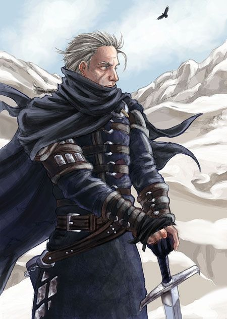

| Yusif Stark | the Quiet Man Kharven, House Stark of Hollenmark as of the last season he came down four galleries, the year the boy was thirteen |
| Epithet | the Quiet Man |
| Concept | He never lets anything show: not the cut before it lands, not the cold, and not the secret. |
| Stat line | Stage VI Glory · Expert (Faceted) Level 160 · Refined · Drillmaster Body VI Mastered, I · Fate V Walked 30%, not yet read · Spirit Studied 10%, not yet read · Lenses: home |
| Combat grammar | Blade; edge, weight and the long clean line of the cut |
| Aura and sound | the Stark cold, a hard white rime over gray, quieter than any Stark’s before him · sound: an ash stick tapping once on a salt floor |
| How he moves | a big man who stands smaller than he is, stooped a little from years of low gallery roofs, one foot forward and one back and turned out, knees soft, the weight low and even and going straight down through the heels the way every Stark’s does; the sword waits in a low guard in both hands and the face above it shows nothing at all. |
| Stack | sustainable mean of 125 in Dexterity, 100, 75 and 62.5 in Resilience, Vitality and Ardency cap two steps on the hidden scale over the sustainable figure (to 400 on Dexterity, 275 on the rest) layers: LET YOUR FEET DO IT’s one step of Reflex while it runs; no release called, no Draft, and the thing he keeps buys him no step |
| Releases | none; the First Release has stood open to him since Stage IV |
| Bonded weapon | none; he wears through a market sword every couple of years and has never bonded one |
| Kit | a long dark coat strapped shut, a scarf to the chin, worn bracers, a captain’s scabbard with a market sword in it, and the piece people talk about first, if they are children: a Common ash stick |
| Voice | ”You protect the weak. You defend the man next door. You keep the north quiet so the children can sleep in it. Everything else is just weather.” speaker type: a soldier who quit the best war-king in the north the morning after the worst night of it, and never explained himself to anyone but children |
| Field | Value |
|---|---|
| Full Name | Yusif Stark |
| Pronunciation | YOO-sif STARK |
| Age | Forty-two when he died, about three years ago; Ulf Stark’s young uncle, younger than his nephew |
| Realm / Faction | House Stark of Hollenmark; once the best of Gimbzo’s captains; afterwards, no one’s, and a quiet road down into the Orrel Cuttings once a season |
| Refusal | He would not put his name on the boy, or say the boy’s father’s; he called him Kasane’s, every time, for sixteen years |
| Conviction | Always swear by your honor, because it’s the only thing you have that can be held to account. He kept the secret until it killed him |
| Field | Value |
|---|---|
| Class | Drillmaster, the soul’s name for a man other men’s feet learned from; a yard-sergeant’s class, common in every company in the north and plain for one of the Seven, offered at Glory when he was still Gimbzo’s captain and had put a few hundred riders through the same low guard · gives: the skill Teaching the Stick, which was Teaching the Sword when the name came · shapes: his points fall to the feet and the hands, to what holds under a blow and what holds its tongue, and few to the pull · evolved from: nothing; it is the first and only name his soul offered him, and he lived it more truly four galleries down than he ever did in a yard; it evolves as his Body Mastery rises |
| Mastery | Body I, Muridic: the lead, at Glory’s ceiling; his Traits work at it · Fate, Walked, and Spirit, Studied: behind a lead of I, and not yet read |
| Level | 160; it holds Glory (115) and would hold Refraction (130), and no Residual Strain builds in him short of 200 |
| Primary | Total |
|---|---|
| Vitality | 600 |
| Ardency | 500 |
| Gnosis | 400 |
| Dexterity | 1,000 |
| Harmonics | 300 |
| Resilience | 800 |
| Tempering | 300 |
| Dominion | 300 |
| Pool | 4,200, all spent |
| Peaks | Reflex, Finesse and Economy; Oath; Tolerance and the Stark cold |
| Measure | Figure |
|---|---|
| EU Reserve | 295,202 EU |
| Flux Density | 30,000 EU/g |
| AU/s | 18,600 · empties in 15.87 seconds at full output |
Traits
Full accounts: Yusif Stark — Abilities
Every Trait reads at his lead Mastery, Body I.
| Trait | Kind | Source | Path and Form | Gates | What it does | Limit | Tell | Cost | Counter | Numbers |
|---|---|---|---|---|---|---|---|---|---|---|
| LET YOUR FEET DO IT | Primary | Lived | — | — | His body fights before his head has decided to, so there is no moment of making up his mind for you to see, and his cuts come with no warning on them. (Primary Trait) | It answers what the body has met before; a fight that needs a new idea needs the mind back, and the instant the mind comes back, the step and the silence both go. | None; that is the point. What anyone watching sees before it starts is the one piece of ritual he allowed himself, the breath, in through the nose until the ribs ache and out through the mouth until nothing is left, and then a face with nobody at home in it. | Nothing, because nothing is being made or thrown. | A fight you have to think your way through: ground he has never stood on, a weapon nobody has shown him, a question asked in the middle of the exchange. Scholars have a name for that as well, the centipede’s trouble, after the creature that walked perfectly until somebody asked it which leg went first. | No reserve; Reflex one step high while it runs. |
| THE THING NOBODY WROTE DOWN | Secondary | Lived | — | — | He is keeping one promise that was never put on paper, and while he keeps it neither fear nor pain gets a word of it out of him. (Secondary Trait) | The keeping; it is a silence, and a silence cannot defend itself except by staying silent. It cannot argue, cannot explain him to his own house, cannot tell his nephew why he rode away, and it could not ask anybody for help on the road where he died. | He says nothing at all, and when the question comes close his hand goes flat on the nearest child’s head, or would. | No reserve. | Ask him in front of the one he is keeping it from; he will walk away rather than lie to the boy, and a man who has to walk away has been moved. | No reserve; kept sixteen years. |
| STARK RIME | Inherited | Inherited | — | — | The Stark cold kept on a short lead: frost on his knuckles and along his blade and no further, where his nephew’s whitens a whole yard. (Inherited Trait) | The cold moves heat and cannot make any, so where everything around him is already frozen hard it has little heat to take and against a real fire it loses. | His breath stops steaming. | — | Heat, and calm. | No reserve at rest. |
Skills and Abilities
Full accounts: Yusif Stark — Abilities
Skills
| Skill | Cues / mechanics | Learned where | Priced by (Sub-Stats) | Rank |
|---|---|---|---|---|
| The Northern Long Sword | low guard in both hands, the smallest step that answers, one cut and no second | the Hollenmark yard, then the long middle of Gimbzo’s war | Reflex, Finesse | Journeyman |
| Teaching the Stick | his hands closed over the child’s on the ash; again, until the feet stop asking the head; he kneels to say the rest | a captain’s yard first, then five years on a gallery floor | Finesse, Economy | Journeyman |
| The Kharven Breath | in through the nose until the ribs ache, out through the mouth until nothing is left, before every fight | the north; every Stark rider has it, and he taught it as the first lesson | Tolerance | Apprentice |
| Keeping His Mouth Shut | one answer or none; walks away before he lies | the morning after the cellars | Oath | Apprentice |
Techniques
| Technique | Kind | Mark | Source | Path and Form | Gates | What it does | Limit | Tell | Cost | Counter | Numbers |
|---|---|---|---|---|---|---|---|---|---|---|---|
| THE DOG THAT DOESN’T BARK | Signature art | — | — | Path Body, Mastered, for the feet, the line and the cold; the Walked Fate for the thing kept; nothing is routed through his Studied Spirit · Lens the Stark cold, the house’s inheritance (no Wellspring) for the rime and the edge; the feet are drill made into law, and the thing kept is his own sworn word · Forms Strike (the feet and the line), Shape (the rime), Bind (the thing kept) | none | He never lets anything show: not the cut before it lands, not the cold, and not the secret | — | — | Every clean line chills his own steel toward breaking, and the thing he keeps can never speak up for him. | — | Sound: one tap of an ash stick |
| THE LONG CLEAN LINE | Signature Technique | Mastered | Lived | — | — | One cut with the whole of him behind it along one line, nothing wasted and nothing shown first, and then it is over. (Signature Technique) | It is one cut, and a man who sees the line can step off it; there is no second stroke folded inside the first, and a blade that has had too many winters of it may be the thing that gives. | One cut, no flourish. | About two per cent of his reserve, near 5,900 EU, and it is B-Grade on the edge. | Do not be where the line ends: break the measure as the heel sets, or crowd him so close the hips have no room to turn. | — |
Physical Description
| Feature | Description |
|---|---|
| Build | He was a big quiet man, and older-looking than his years. |
| Hair, face and eyes | His hair went gray early and silver after, worn short and swept back off a lined, weathered face, with pale gray eyes narrowed against snow-light and a mouth that rarely moved. |
| Road dress | He dressed for the road, in a long dark coat buckled close down the front with straps of worn leather, heavy leather bracers and fingerless gauntlets, a broad belt, and a dark scarf wound high round his throat and over his shoulders like a short cloak; he carried a plain northern longsword and an ash stick. |
| In the Cuttings | When he came down four galleries into the Cuttings he brought salt-meat and wool and stood in the low doorway stooping, and the children did not know his name. |
Voice
| Field | Value |
|---|---|
| Speaker type | a soldier who quit, and taught children |
| Notices first | whether the children are fed |
| Sentence length | very short; he said things once |
| Contractions | sometimes |
| Never says | his own name to the children, or the boy’s father’s |
| Habit | a hand laid flat on a child’s head, saying nothing; he knelt to talk to them |
| Sample line | ”You protect the weak. You defend the man next door. You keep the north quiet so the children can sleep in it. Everything else is just weather.” |
Equipment
| Item | What it is | Grade | Rarity | Rung | Bonded |
|---|---|---|---|---|---|
| The ash stick | a yard of straight ash, thick as a thumb | plain | Common | — | no |
| The road sword | plain northern longsword off a market stall | plain | Common | — | no |
| The captain’s scabbard | long scabbard of dark leather, its outer face set with riveted steel diamonds | plain | Rare | — | — |
| The long coat | long coat of dark indigo wool, buckled close down the front with leather straps and steel rings | plain | Uncommon | — | — |
| The scarf, the bracers and the belts | dark wool scarf wound high and over the shoulders like a short cloak, heavy leather bracers set with small steel plates, fingerless gauntlets, a broad belt with a steel buckle and a second slung for the scabbard | plain | Common | — | — |
| Item | Maker’s mark | Mass and balance | Against armor | Look | How shown off | What people say |
|---|---|---|---|---|---|---|
| The ash stick | — | next to no mass, balanced at the middle | beats a boy’s guard, and nothing else was ever asked of it | cut green out of a hedge on the Halcrest road and never oiled; the bark long gone, the wood white going gray, salt-bitten at the butt where it taps the floor, with a shine worn on it at a man’s grip and a second, lower down, at a boy’s | it is the only weapon he ever took down four galleries, and the best captain Gimbzo had taught with it for five years | almost nobody knows to say anything; two children in the Orrel Cuttings know it, and the boy’s feet answer to it |
| The road sword | no proof-mark | about a kilogram and a third, balanced a hand above the guard | cuts cloth, hide and mail; worked harness stops the steel, and THE LONG CLEAN LINE does not ask the steel | gray steel and a straight cross, the grip bound in black cord by whoever sold it; his own rime turns ordinary steel brittle, so he wears through one every couple of years, buys the next in the nearest town and leaves the old one with a farrier | a man who stood where he stood could have carried a Kingsarm, and he carries what a drover would | old riders of Gimbzo’s say he left a far better sword lying on a table in Halcrest the morning after the cellars, and nobody will tell you who picked it up |
| The captain’s scabbard | — | — | — | a captain’s piece from Gimbzo’s service, each steel lozenge pinned at four corners, one gone and never replaced; it was cut for a heavier blade, so his market swords ride loose in it and he has packed the throat with a strip of wool he wears it low behind him under the skirts of the coat | — | it is the one thing on him an old soldier would know, and the one thing he kept, and he has never said why |
| The long coat | — | — | — | gone blue-black with weather, salt-stained to the knee, every strap resewn by his own hand; there is a paler patch on the breast where a wolf was picked out stitch by stitch | by having cut off the only thing that would have told anyone | the Orrel gate-clerks have him down as a wool-seller |
| The scarf, the bracers and the belts | — | — | — | all of it old, oiled and mended, the strap-ends cut short so nothing catches he pulls the gauntlets off before he lays a hand on a child’s head | — | — |
Lore
Full account: Yusif Stark — Lore
Ties
| Person | Who they are to him |
|---|---|
| Muken Moto | whom he raised from four galleries up |
| Yukazuri Moto | who had the first needle from him |
| Kasane Byakuya | his little sister in everything but blood |
| Ulf Stark | his nephew |
| Gimbzo | whom he quit |
| Lorn Stark | who carried his message: Yusif called him Kasane’s |